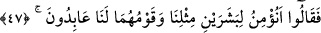
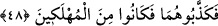
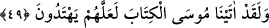

dikbaşlılık olan bir topluluk oldular.
47. Bu yüzden: “Kavimleri bize kölelik ederken, bizim gibi olan bu iki adama
inanır mıyız?” dediler.
“Bu yüzden:” kendi aralarında birbirlerine nasihat yollu “Kavimleri” yâni
İsrâiloğulları “bize kölelik ederken,” yâni köleler gibi bize hizmet ederken ve boyun
eğerken “bizim gibi olan bu iki adama inanır mıyız?” yâni inanmayız ve bizden îmanın
sâdır olması gerekmez. “dediler.”
Sanki onlar İsrâiloğulları’nın kendilerine kölelik ettiğini söylerken, onların durumuna
karşı koymak, onların kendileri gibi bir beşer olmasından başka diğer bir yönden
onların yüce rütbesini risâlet mansıbından aşağı düşürmek istiyorlardı.
Kâşifî der ki: “Bazı tefsirlerde şöyle aktarılmıştır: İsrailoğulları Firavun’a
tapıyorlardı -ki bundan Allah’a sığınırız-, Firavun ise bir puta veya buzağıya tapardı.”
Yâni bu durumda İsrâiloğulları’nın onlara itâati gerçek ibâdet olmuş olur.
48. Böylece onları yalanladılar ve bu sebeple helâk edilenlerden oldular.
“Böylece onları yalanladılar” yâni Mûsâ ve Hârun’u yalanlamada ısrar ettiler.
Sonunda o ikisi de onların kendilerini tasdik etmesinden ümid kestiler “ve bu sebeple”
Kızıldeniz’de boğulmak sûretiyle “helâk edilenlerden oldular.”
49. Andolsun biz Musa’ya, belki onlar yola gelirler diye, Kitab’ı verdik.
“Andolsun biz” onları helâk ettikten ve İsrâiloğulları’nı onların ellerinden
kurtardıktan sonra “Musa’ya, belki onlar” İsrâiloğulları Tevrat’taki şer‘î esasları ve
hükümlerle amel ederek hak “yola gelirler diye, Kitab’ı” Tevrât’ı “verdik.”
50. Meryem oğlunu ve annesini de (kudretimize) bir alâmet kıldık; onları,
yerleşmeye elverişli, suyu bulunan bir tepeye yerleştirdik.